KZG
KZG 承诺又叫做 KZG10 承诺,是由 Kate, Zaverucha, and Goldberg 三位作者共同提出.
1.多项式表示
多项式 P(x)可以用系数表述,如简单可表示为
,所以对于一个多项式 P(x)可以表示为,其中表示对应位置的系数.
2.Commitment Scheme
2.1 Commit Schemes 过程：
可以把承诺 C(m)理解为一个装着信件 m 的信封

- Setup 阶段产生一些公共参数
- Commit 阶段:对消息 m 进行承诺得到 C(m)
- Open 阶段:打开 C(m)得到 m‘,验证 m是否等于 m’. commit 阶段的 m，在 open 阶段是会暴露的.
2.2 commit Schemes 性质：
-
Hiding:意味着敌手获得承诺 c(m)后无法获得 m 的值
- computational hiding:对于任意的 PPT 敌手 A.有 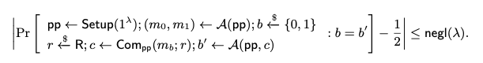
- Perfect hiding:将 A 的计算能力修改为无穷算力,“≤ negl(λ)”替换为 0
-
Binding:是指一个承诺 c(m) 在 Open 阶段打开只会得到 m 而不会得到 m‘.
- computational Binding 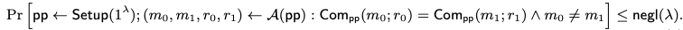
- perfect binding::将 A 的计算能力修改为无穷算力,“≤ negl(λ)”替换为 0
2.3 Polynomial Commitment Schemes：PCS
多项式承诺 PCS:承诺对象是单变量多项式,:表示所有 degree 最多为 d 的单变量多项式的集合。过程可总结如下图
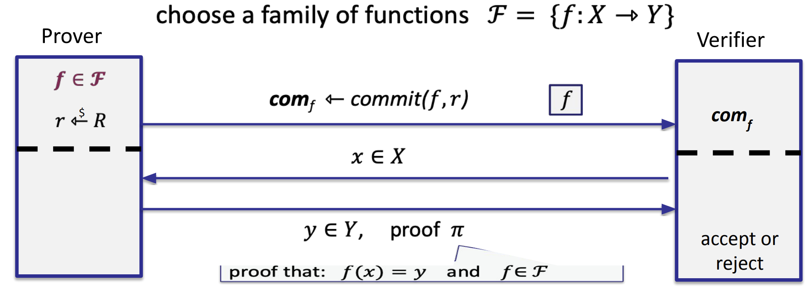
- Prover 运行 Commit 算法,将函数 f 与随机数 r 作为输入,为输出.将发送给 Verifier
- Verifier 发送一个挑战点:即一个函数域 X 中的元素 x
- Prover 将 x 对应的 f(x)=y,以及 proof 发送给 Verifier. 表明 1.f(x)=y 2.f 属于 F,即 f 的 degree<=d.
其中 Prover 需要计算如下内容
- 多项式的承诺 C=[P(x)]
- 多项式在 z 点的值,P(z)=y,这很简单
- the proof
PCS 有多种,比如 FRI or Dark’20 or Dory’20 .但是 KZG 仍然是目前实践中使用最为广泛的 PCS 方案.其特点如下
- 基于 Pairing 实现
- Proof size 是常量 (一个椭圆曲线群元素)
- 验证时间是常量 (两次 pairing 操作)
其中特性 2 与 3 导致可以将其构造成一个 SNARK 方案.SNARK 的全称是 Succinct Non-interactive Argument of Knowledge:简洁非交互式知识论证.
SNARK 要求 1.size of proof=O(log(d)) 2.time of Verification =O(log(d)),d 为 degree of Polynomial.
进而可以将 KZG 应用在零知识证明系统如 ZK-SNARK 中.
3.计算多项式的承诺 C
在计算之前,首先介绍两个概念
3.1 椭圆曲线(EC)
这里只简单提一下椭圆曲线,更多细节可参考阅读 basic elliptic curve cryptography series.
假设是由椭圆曲线点构成的群,g 是的生成元.
用符号[x]表示.由于椭圆曲线的离散对数难题,给定 g 与[x],但无法逆推出 x.
3.2 Trusted Setup
对多项式进行承诺,需要一个与多项式系数数量一样长的 structured reference string（SRS）。该字符串必须按照指定的方式生成，并提供给任何希望承诺多项式的参与方。生成过程会产生一个秘密值 s,也称为 trapdoor 或者 toxic waste），必须将 s 其丢弃。换句话说，生成参考字符串的任何一方都知道一个信息片段，该信息可以破坏多项式承诺方案的 binding 性质，从而破坏使用该承诺方案的任何证明系统的正确性。生成这样的 SRS 过程被称为可信设置（trusted setup).
设 D 是希望支持承诺的多项式 P(x)的最高次数上界, SRS =.
目前主流是通过 Ceremony 生成 SRS,关于 Ceremony 的详细细节可参考 https://mirror.xyz/privacy-scaling-explorations.eth/naTdx-u7kyirczTLSAnWwH6ZdedfTQu1yCWQj1m_n-E
Ceremony 的思想与 MPC 类似，让 N 名参与者生成自己的秘密，并按顺序将其添加到主秘密中。只要有一个参与者不泄露秘密，那么主秘密就是安全的。主秘密的生成过程被称为 Ceremony.
可进入 https://ceremy.ethereum.org 参与以太坊社区组织的 KZG Ceremony 的生成过程,成为其中一名贡献者!
3.3 combine Trusted Setup and EC
-
Trusted Setup 阶段生成 SRS=(),n 为 P(x)的 degree.然后将 s 丢弃。任何人都可以访问 SRS，但是无法获得 s 本身.
-
通过 SRS 重新构造多项式 P(x)为[P(s)],而不会暴露 s 与多项式本身
上式中，用秘密 s 替换自变量 X,得到 P(s):因为自变量 x 可以表示为任何值,.这不影响多项式本身.进而得到承诺 C=[P(s)]
4.计算 proof
我们需要 proof 证明 P(z)=v.构造前先引入一些 polynomial math.
P(x)的零点为 m，即 P(m)=0.那么 P(x)一定能整除（x-m),即存在一个商多项式 q(x).使得
想要证明的是 p(z)=v,结合上述 polynomial math.可做如下变换.
p(X)-v=0 when X=z,则 p(X)-y 能整除(X-z) ,即,即.
也把 q(X)称为**“Witness Polynomial”**
对于,不能直接利用这个等式,因为等式中的**s **两方都不知道
直觉上,我们希望直接证明等式 [p(s)-v] = [q(s)*(s-z)]成立,从而完成验证.
等式左边:
承诺仅满足加法同态:,所以[p(s)-v]=[p(s)] -[v]
等式右边:
在验证过程中,验证方会收到证明方发来的[p(s)] ,同时验证方自己可以计算[s-z]=[s]-[z]的值
但是由于椭圆曲线上不满足乘法,即乘法****同态:[p(s)]*[q(s)] =[p(s)*q(s)]
所以等式**[q(s) * (s-z)]= [q(s)]*[s-z]** 并不成立,需要引入配对 pairing。
因为椭圆曲线上的运算是一个加法群，而不是一个乘法群，乘法没有被定义。
这里需要强调的是，单个运算结构其实并不区分加法乘法，a o b 这个 o 把它称作成什么都行 只是在有限域上的椭圆曲线点集构成一个加法群，把它称为加法是更符合习惯。 我们区别加法与乘法，比如两种运算的代数结构比如环，域。 因为有两种运算，需要做区分，因为涉及到分配律，谁对谁分配的问题，所以会很明确的区分加法与乘法。
5.Pairing
Pairing is **a bilinear mapping.深入学习Pairing可参考《Pairing for beginners》**这本书,在这里只做简单介绍.
- bilinear
- Linearity:对于某些一元函数,如果该函数服从
- Bilinearity:对于二元函数,Linearity 存在于所有维度中,即
- bilinear mapping 双线性映射是一个函数,它从两个向量空间的元素产生第三个向量空间的元素,每个参数都是线性的.
5.1 about pairing
配对是⼀种抽象操作。其定义可能会有所不同。 有 Tate 配对、Weil 配对、Ate 配对等等…… 虽然每⼀个都通过不同的操作来定义配对,但是Input与output的格式,pairing 的属性都是固定的.
Input:
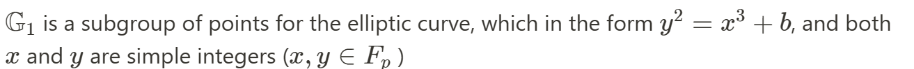
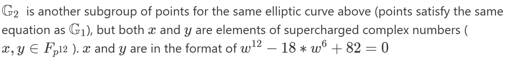
output：
n 阶乘法群中的整数（或复数)
分别是对称与非对称的 Pairing 形式。在实际中，非对称 Pairing 效率最高。
properties：
- e(P, Q + R) = e(P,Q) * e(P, R)
- e(P + S, Q) = e(P,Q) * e(S, Q)
- (bilinear)
- e(P, Q) ≠ 1 (non-degeneracy property)
5.2 Pairing examples
1.e(x, y) = 2ˣʸ
例: 请举例在实数域中 e(x, y) = 2ˣʸ 是双线性函数.
- e(3, 4 + 5) = 2³˙⁹ = 2²⁷
- e(3, 4) * e(3, 5) = 2³˙⁴ * 2³˙⁵ = 2¹² * 2¹⁵ = 2²⁷.
- 通过 pairing 证明知道 x² - x - 42 = 0 的解, 然而并不透露这个解的具体数值.
如果 成立, 那么 k 必须为 0 或者目标群的倍数.
如果存在 , 可以确定原始二次方程式成立. 使用双线性性重写方程 .进一步,e(xG, xG) ⋅ e(xG, -G) ⋅ e(G, -42G) = 1.
因此只需要提供 xG 的值. 同时由于椭圆曲线的离散对数问题, 从 xG 反推回 x 是困难的.
2.解决 Diffie-Hellman 难题
3.BLS签名
6.KZG
回到KZG部分
分别是同一椭圆曲线的两个子群.g 是子群的生成元,h 是子群的生成元
生成元的选择通常在 trusted Setup 阶段选择
define pairing e: ,对于秘密 s 也相应有两个分布.即SRS
原来要验证的等式： =>
分布集1: ，对应生成元为g。计算π、C、
分布集2: ，对应生成元为h。计算
验证者验证等式：
简单理解这个等式：
[x]g 与 g^x 表述形式不同，本质上没有什么区别。 a o b =c 如果群运算定义为加法，就使用[x]g 这种形式 如果群运算定义为乘法，就使用 g^x 这种形式
用黑盒来理解这个等式的话，就等价于在群中去验证下面乘法的成立
Verifier 如何进行验算：
- prover 发送,C,v
- Verifier 自己选择的 z,根据加法同态,Verifier 可以计算_[s -z]₂=[s]₂ - [z]₂_
- g,h is public,pairing function is public.
KZG 完整过程：
- 通过 Trusted setup, 产生 SRS:[sⁱ]₁, [sⁱ]₂.
- Prover 使用_[sⁱ]₁_,对多项式 P(x)进行 commit,得到 C = [p(s)]₁, 发送给 Verifier.
- Verifier 选择挑战点_z _∈ {0,…,p−1}
- Prover 发送 π 、y 给 Verifier:
- Verifier 检查等式: _e(π, [s -z]₂) = e(C -[v]₁, H) _— if the equation holds, the verifier accepts the proof — if the equation does not hold, the verifier rejects the proof
KZG 分析
对 KZG 的 Corretness Binding hiding 分别分析
- Corretness
等式左边:
等式右边:
- hiding
因为椭圆曲线的离散对数难题,敌手拿到[x]无法得到 x.
- Binding
分析 Binding 前，需要介绍 SDH 假设。
Strong Diffie-Hellman(SDH) 问题定义如下：
给定(q+1)长的元组 作为输入，输出
SDH假设就是不存在多项式时间算法可以以不可忽略概率解决 SDH 问题。下面用对称形式的 Pairing 进行分析
后续 pairing 的验证都是“g 的指数上”在进行验证,为了方便起见.省略底数 g,后续的等式都是在指数位置上进行.
反证法,即KZG不满足 binding,那么 open 承诺 C 可以得到值 v 和 v’，承诺方必须确定两个不同的值 y 和 y’，使得下列等式成立:
即
因为,假设 , 等式两边同时除以可得:
,即,这说明有人可高效计算出,这违背了SDH假设.
总结:
像之前说的那样,KZG 方案的 Proof size 是常量 (一个椭圆曲线群元素),验证时间也是常量 (两次 pairing 操作),这是其优点.但是其最大缺点是需要一个 Trusted Setup 阶段.
7.Batch-KZG proof：multi proof
上述过程验证了⼀个在单点上求值的多项式。但如果想证明⼀个多项式上在多点上的值，就必须⼀次⼜⼀次地重复同样的协议 (back and forth)。这显然是没有效率的。为了解决这个问题，需要 “批量 “验证多项式上的点。
假设想证明 k 个点上的值：
通过使用拉格朗日多项式插值法，构造一个经过上述 k 个点对的 k-1 次多项式
n+1 个坐标对的形式 可以唯一的恢复出一个多项式
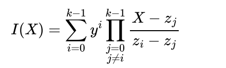
**原多项式 P(x)与构造的 I(x)**都经过 k 个点对，所以多项式 P(x)-I(x)=0 在如下点上满足
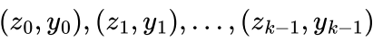
即多项式能够整除
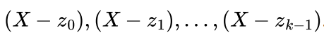
定义一个 zero polynomial:
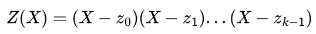
则下式成立
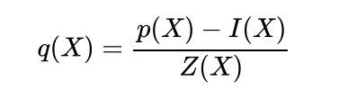
定义 kate multiproof for the evaluation of these points：
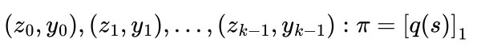
验证过程如下：
- Verifier 通过 k 个 points(z,y)计算 Z(x)和 I(x)
- Verifier 计算
- Verifier 验证等式是否成
8.KZG in ZK-Rollup
在 zk-rollups 的情况下,想证明发生在 L2 上的一些计算是有效的。简单来讲，发生在 L2 上的计算可通过称为“ witness 生成”的过程表示为二维矩阵。然后可以用多项式列表来表示矩阵 - 每列都可以编码为其自己的一维向量。然后，计算的有效性可以表示为这些多项式之间必须保持的一组数学关系。例如，如果前三列分别由多项式 a(x)、b(x) 以及 c(x) 表示，可能需要关系 a(x)⋅b(x)−c(x)=0 保持。多项式（代表计算）是否满足这些“正确性约束”可通过在一些随机点评估多项式来确定。如果“正确性约束”在这些随机点上得到了具体的满足，则一名验证者可以非常高的概率断言计算是正确的。
很自然地看到像 KZG 这样的多项式承诺方案，是如何直接插入到这个范式中的：rollup 将 commit to 一组多项式，它们一起代表计算。 然后，验证者可要求对一些随机点进行评估，以检查正确性约束是否成立，从而验证多项式表示的计算是否有效。

最后感谢@Kurt-Pan的指导与建议
参考文章
Understanding KZG10 Polynomial Commitments (taoa.io)
Kate Commitments: A Primer - HackMD
Dankrad Feist’s kzg commitment post
https://blog.subspace.network/kzg-polynomial-commitments-cd64af8ec868
Understanding KZG10 Polynomial Commitments
book:Proof,argument and zero knowledge
KZG原始论文